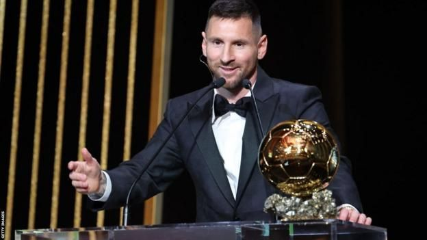
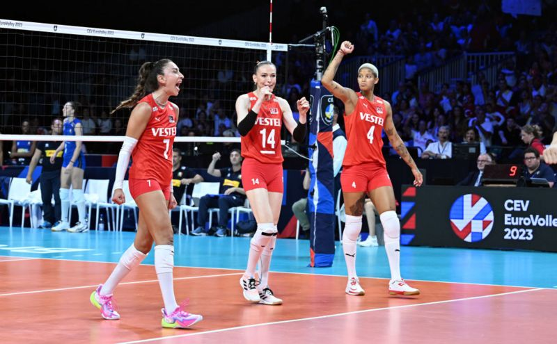
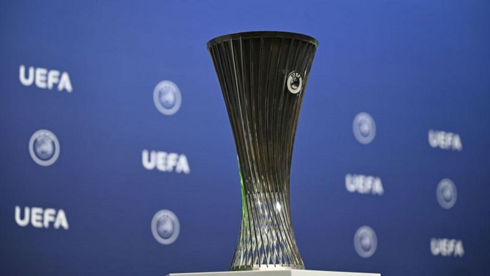

:31.13 ₺
:31.13 ₺  :28.68 ₺
:28.68 ₺
 :1807.8 ₺
:1807.8 ₺

BALLON D’OR: MESSİ ALTIN TOP ÖDÜLÜNÜ SEKİZİNCİ DEFA KAZANARAK REKORUNU GELİŞTİRDİ
36 yaşındaki futbolcunun bu ödülü kazanmasında, geçen yıl Katar’da düzenlenen Dünya Kupasını kazanması etkili oldu.
Paris’te düzenlenen ödül töreninde konuşan Messi, “Bir kere daha burada olmak ve bu ödülü kazanmak çok hoş. Dünya Kupası’nı kaldırmak hayalimdi” dedi ve ekledi: “Böylesi bir kariyerimin olacağını hayal edemezdim.”
FİLENİN SULTANLARI, NEFES KESEN GERİ DÖNÜŞLE AVRUPA VOLEYBOL ŞAMPİYONASI'NDA FİNALE YÜKSELDİ
Türkiye Kadın Milli Voleybol Takımı, Avrupa Voleybol Şampiyonası’nda İtalya'yı 3-2 yenerek finale yükseldi. Türkiye Pazar günü finalde, diğer yarı finalde Hollanda’yı 3-1 yenen Sırbistan’la karşılaşacak.
BEŞİKTAŞ VE FENERBAHÇE'NİN KONFERANS LİGİ'NDEKİ RAKİPLERİ BELLİ OLDU
Turnuvaya ilk torbadan girdiği için avantajlı olan Fenerbahçe, H grubunda Bulgar liginin şampiyonu Ludogorets, Slovak ekibi Spartak Trnava ve Danimarka ligini geçen sezon ilk sırada bitiren Nordsjælland ile eşleşti.
Beşiktaş ise D grubunda Belçika'dan Club Brugge, 19. haftanın geride kaldığı Norveç liginin lideri Bodø/Glimt ve İsviçre'den Lugano ile karşılaşacak.